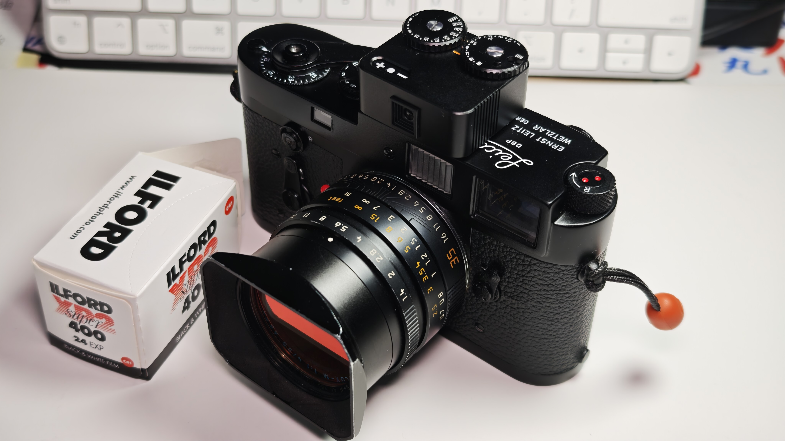
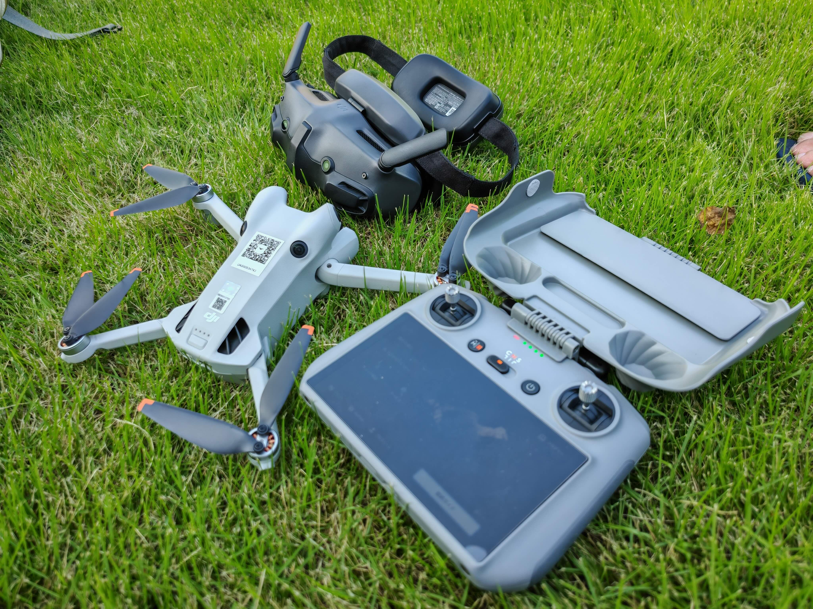

私が使っているカメラ機材とガジェットをご紹介します。実際に使用した経験を基に、重量・サイズ・性能のバランスを重視した選択をしています。



機材の売却について
新しい機材への更新に伴い、使用しなくなった機材を時々売却しています。状態の良い機材のみを丁寧にメンテナンスした上で出品します。
丁寧な使用
できるだけ丁寧に使っていますので基本的には美品が多いと思います。
正直な状態説明
小さな傷や使用感についても正直にお伝えします。
安心の取引
動作確認を十分に行い、必要に応じて元箱や付属品もお付けします。